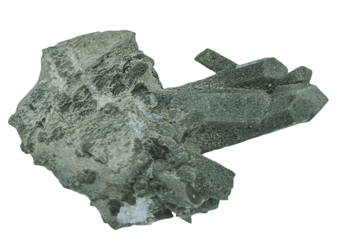

Lindsay's crystal collection storage and database!
Lodolite - scenic quartz
characteristics: contains chlorite inclusions
composition: Silicon dioxide, silica
dimensions: d=2cm C=6.5cm
notes: chlorite inclusions can appear in various colors like green, white, orange, pink or purple
quartz crystal
characteristics: many tiny crystal points
composition: Silicon dioxide, silica
dimensions: width=4cm height=1.8cm
notes: This piece was mined by Lindsay and Donna Wright at Jackson's Crossroads Amethyst Mine in Tignall GA, 2019
desert jasper
characteristics: opaque; brown, red and tan colors from iron inclusions
composition: Silicon dioxide, with varying impurities
dimensions: width=3.5cm height=2.8cm
notes: discovered in Madagascar; also known as polychrome jasper

chlorite quartz
characteristics: pale green color, either as inclusions or rough, opaque texture
composition: Silicon dioxide, silica; chlorite
dimensions: width=5.5cm height=2cm
notes: chlorite minerals form in an igneious process to create chlorite quartz
quartz crystal with calcite
characteristics:
composition: Silicon dioxide; calcium carbonate
dimensions: width=5cm height=3cm
notes: quartz is harder than calcite
kaolinite in quartz
characteristics: clay and layered silicate mineral; kaolinite is white in color and is one of the most common minerals
composition: silicate mineral; silicon dioxide
dimensions: d=1.5cm c=5cm
notes: also known as kaolin, or China clay
titanium aura quartz
characteristics: quartz crystal coated in the metal, titanium
composition: titanium; silicon dioxide
dimensions: (largest piece) width=3.1cm height=.2cm
notes: titanium layers are added to the quartz with electricity
green tourmaline
characteristics: green tourmaline is part of the lithium-tourmaline elbaite species
composition: crystalline silicate mineral; elbait species includes lithium, sodium, and aluminum
dimensions: width=1.6cm height=.4cm
notes: all varieties of tourmaline contain chemically bound water.